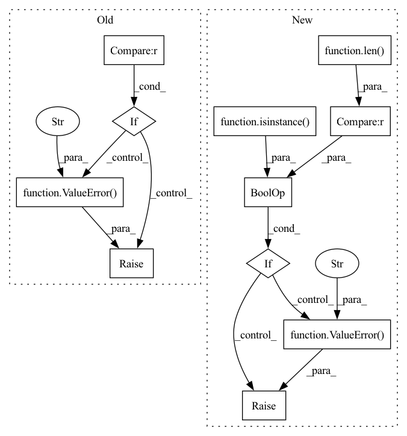

Pattern ID :6500

Before Change
ValueError: If phase not in self.phases.
ValueError: If metric.compute() return tensor with non zero shape.
if phase not in self.phases:
raise ValueError(f"Incorrect epoch setting. "
f"Please choose one of enum value {self.phases}")
log = {}
for metric_with_utils in self.__phase2metrics[phase]:
metric_value = metric_with_utils.compute()
After Change
raise ValueError(f"{metric_with_utils.log_name} must compute number value, "
f"not torch tensor with shape {metric_value.shape}.")
// If it numpy array with wrong shape.
if isinstance(metric_value, np.ndarray) and len(metric_value.shape) != 0:
raise ValueError(f"{metric_with_utils.log_name} must compute number value, "
f"not numpy array with shape {metric_value.shape}.")
// If it numpy array with one element but wrong dtype
if (isinstance(metric_value, np.ndarray) and len(metric_value.shape) == 0 and
np.issubdtype(metric_value.dtype, np.number)):
raise ValueError(f"{metric_with_utils.log_name} must compute number value, "
In pattern: SUPERPATTERN
Frequency: 3
Non-data size: 11
Instances
Fragment ID: 22542071
Project Name: eora-ai/torchok
Commit Name: d8c48d17577a0f16e28022ba1ead8e9e07e7f62f
Time: 2022-05-05
Author: rashit.bayazitov.1995@gmail.com
File Name: src/metrics/metric_manager.py
M Class Name: MetricManager
N Class Name: MetricManager
M Method Name: on_epoch_end(2)
N Method Name: on_epoch_end(2)
M Parent Class: nn.Module
N Parent Class: nn.Module
M File Name: src/metrics/metric_manager.py
N File Name: src/metrics/metric_manager.py
M Start Line: 170
M End Line: 180
N Start Line: 165
N End Line: 187
'>
Before Change
else:
latents = torch.randn(shape, generator=generator, device=device, dtype=dtype)
else:
if latents.shape != shape:
raise ValueError(f"Unexpected latents shape, got {latents.shape}, expected {shape}")
latents = latents.to(device)
// scale the initial noise by the standard deviation required by the scheduler
latents = latents * self.scheduler.init_noise_sigma
After Change
if image is None:
batch_size = batch_size * num_images_per_prompt
shape = (batch_size, num_channels_latents, height // self.vae_scale_factor, width // self.vae_scale_factor)
if isinstance(generator, list) and len(generator) != batch_size:
raise ValueError(
f"You have passed a list of generators of length {len(generator)}, but requested an effective batch"
f" size of {batch_size}. Make sure the batch size matches the length of the generators."
)
if latents is None:
latents = randn_tensor(shape, generator=generator, device=device, dtype=dtype)
else:
'>
Fragment ID: 22542069
Project Name: huggingface/diffusers
Commit Name: 2ced899cc7cff5c37f2186819c90538ce301908c
Time: 2023-04-27
Author: patrick.v.platen@gmail.com
File Name: examples/community/lpw_stable_diffusion.py
M Class Name: StableDiffusionLongPromptWeightingPipeline
N Class Name: StableDiffusionLongPromptWeightingPipeline
M Method Name: prepare_latents(12)
N Method Name: prepare_latents(10)
M Parent Class: DiffusionPipeline,TextualInversionLoaderMixin,FromCkptMixin,LoraLoaderMixin
N Parent Class: StableDiffusionPipeline
M File Name: examples/community/lpw_stable_diffusion.py
N File Name: examples/community/lpw_stable_diffusion.py
M Start Line: 628
M End Line: 662
N Start Line: 822
N End Line: 862
'>
Before Change
else:
latents = torch.randn(shape, generator=generator, device=device, dtype=dtype)
else:
if latents.shape != shape:
raise ValueError(f"Unexpected latents shape, got {latents.shape}, expected {shape}")
latents = latents.to(device)
// scale the initial noise by the standard deviation required by the scheduler
latents = latents * self.scheduler.init_noise_sigma
After Change
if image is None:
batch_size = batch_size * num_images_per_prompt
shape = (batch_size, num_channels_latents, height // self.vae_scale_factor, width // self.vae_scale_factor)
if isinstance(generator, list) and len(generator) != batch_size:
raise ValueError(
f"You have passed a list of generators of length {len(generator)}, but requested an effective batch"
f" size of {batch_size}. Make sure the batch size matches the length of the generators."
)
if latents is None:
latents = randn_tensor(shape, generator=generator, device=device, dtype=dtype)
else:
'>
Fragment ID: 22542072
Project Name: huggingface/diffusers
Commit Name: 9965cb50eac12e397473f01535aab43aae76b4ab
Time: 2023-04-22
Author: SKYTNT@outlook.com
File Name: examples/community/lpw_stable_diffusion.py
M Class Name: StableDiffusionLongPromptWeightingPipeline
N Class Name: StableDiffusionLongPromptWeightingPipeline
M Method Name: prepare_latents(12)
N Method Name: prepare_latents(10)
M Parent Class: DiffusionPipeline,TextualInversionLoaderMixin,FromCkptMixin,LoraLoaderMixin
N Parent Class: StableDiffusionPipeline
M File Name: examples/community/lpw_stable_diffusion.py
N File Name: examples/community/lpw_stable_diffusion.py
M Start Line: 628
M End Line: 662
N Start Line: 822
N End Line: 862